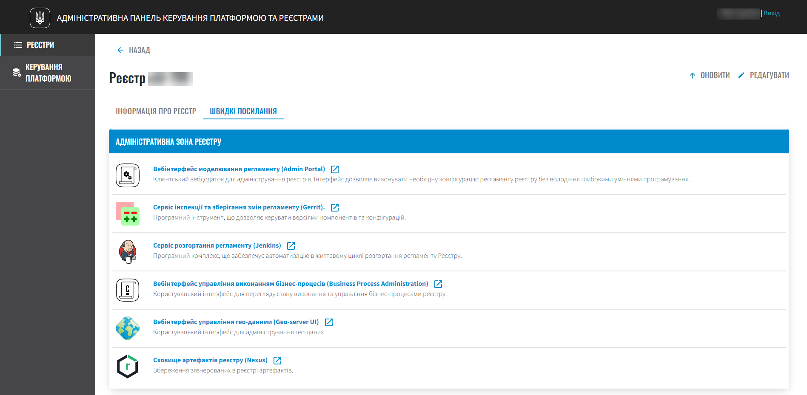
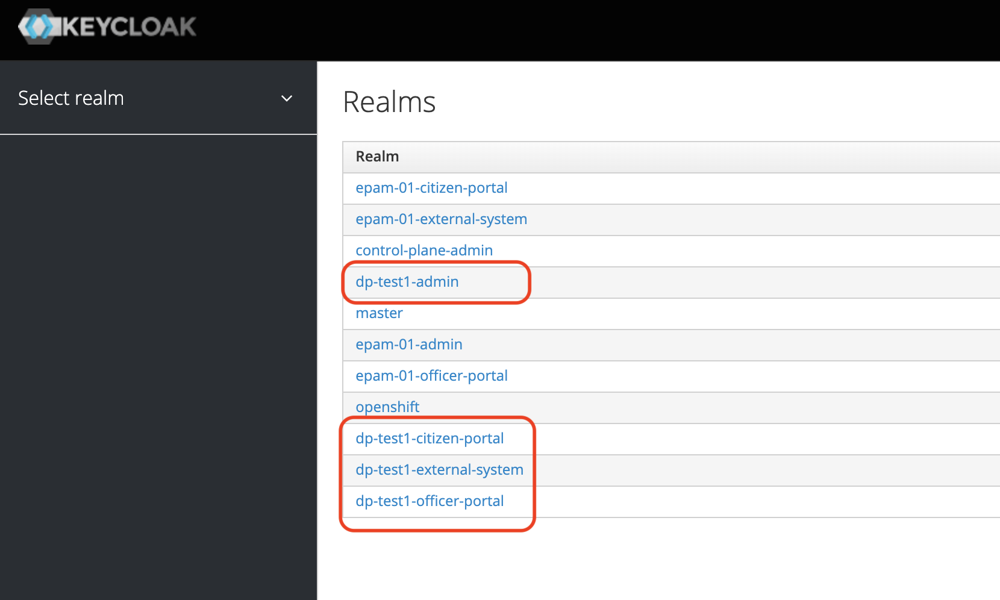

Registry administrators onboarding
- 1. Introduction
- 2. Registry administrators: responsibilities and requirements
- 3. Registry administrators and their role on the Platform
- 4. How the registry is deployed and how its configuration is updated
- 5. Getting started
- 6. Managing registries in the Control Plane admin panel
- 6.1. Editing registry configuration
- 6.2. Creating and deleting registry administrators
- 6.3. Configuring digital signature keys and certificates
- 6.4. Managing registry resource
- 6.5. Configuring custom DNS
- 6.6. Setting registry component access restrictions (CIDR)
- 6.7. Configuring user authentication
- 6.8. Managing digital document upload restrictions
- 6.9. Configuring interaction with external systems
- 6.10. IP-level access restrictions to SOAP routes of the secure exchange gateway "Trembita"
- 6.11. Configuring mail server
- 7. Adding users to the registry
- 8. Backing up and restoring of the registry and its components
- 9. Updating registry
- 10. Logging events (Kibana)
- 11. Monitoring Platform metrics (Grafana)
- 12. Administering and debugging business process
- 13. Working with geodata
- 14. Working with registry regulations
- 15. Utilizing the demo registry for digital regulations development
- 16. Authenticating user in the registry
| 🌐 This document is available in both English and Ukrainian. Use the language toggle in the top right corner to switch between versions. |
|
You have the opportunity to not only familiarize yourself theoretically with educational materials but also to test the practical operation and configure everything described on this page in a test registry. This registry can be deployed by the Platform administrator in a separate project (namespace) on the Platform. This test registry contains a ready-made set of basic configurations for various services and resources specially dedicated to them. Additionally, the Platform administrator can deploy a demo registry for you — a model registry containing reference and other examples for creating a digital regulations. It encompasses various elements for developing data models, business processes, UI forms, analytical reporting, extracts, notifications, external integrations, and much more. Detailed instructions for deploying the demo registry can be found at Deploying demo registry with reference examples. |
1. Introduction
This page is intended for educating registry administrators and provides a comprehensive description of their role, responsibilities, and requirements related to managing, supporting, and monitoring the registry and its components. The educational material covers a wide range of aspects related to working with the registry and the skills necessary for effectively performing administrator duties.
Specific features of working with the registry regulations are described, defining its operational logic, including data models, business processes, and user interfaces.
Furthermore, a detailed overview of the centralized administrative interface for managing registries is provided — the Control Plane admin panel. The process of creating registry administrators with necessary access rights is explained.
Educational material also highlights user management and registry access through the authentication and authorization tool known as Keycloak.
The course covers topics such as authentication processes for end-users, backup and restoring of registry components, including databases, using automated processes in Jenkins.
The process of updating registry components, managing service resources, integration with other registries and external systems through REST and SOAP APIs is explained.
The course imparts knowledge about configuring keys and digital signature certificates for the registry, configuring domain names for registry web portals and the Keycloak service.
It also explains how to restrict access to registry components using CIDR, approve or reject registry change requests (Merge Requests).
The course also includes administering business processes using Camunda BPM, configuring and using VCS git and Gerrit, as well as managing configurations and access limits (rate limits) to internal resources using the Kong API gateway.
Additionally, the educational material discusses configuring a mail server for message exchange within the registry. Thus, after completing the course, you will gain a thorough understanding of registry administration aspects and the necessary skills for fulfilling this role.
2. Registry administrators: responsibilities and requirements
Responsibilities and requirements for a registry administrator encompass servicing, supporting, and monitoring the registry and its components.
| For more details, you can refer to Registry administrator: duties and responsibilities. |
3. Registry administrators and their role on the Platform
The Platform administrator creates a registry and adds the initial administrator for that registry. Subsequently, such a registry administrator creates other administrators.
These administrators have the ability to work with the registry, including editing settings by making changes to the registry configuration.
| Familiarize yourself with the role of a registry administrator and their area of responsibility through the Platform’s structural diagram. |
4. How the registry is deployed and how its configuration is updated
Deployment and updating of registry configurations occur through the GitOps approach.
What is the GitOps approach?GitOps is an approach to managing infrastructure and software deployment that is based on the use of the Git version control system. In the GitOps approach, all configuration files, infrastructure descriptions, and software code are stored in a Git repository. This means that any changes to the infrastructure or software occur through commits to the Git repository. |
The core registry configurations are stored in the deploy-templates/values.yaml file of the control-plane-gerrit component within your registry’s Gerrit repository. The Gerrit repository serves as a code review system built on the git VCS.
Part of the configurations is also stored in files such as:
-
deploy-templates/helmfile.yaml — configuration of helm releases for registry components.
-
deploy-templates/values.gotmpl — configuration of disk sizes for registry components.
The deployment of registry configurations is managed by the control-plane-jenkins component, specifically through an automated Jenkins process (also referred to as a job) MASTER-Build-<registry-name>, where <registry-name> is the name of the registry. This process is triggered by the event of a git merge of changes into the master branch of your registry’s repository within the central Gerrit component of the Platform.
Actual configurations are applied to the registry through the convenient interface of the Control Plane component—the administrative control panel for the Platform and registries (for more details, refer to Managing registries in the Control Plane admin panel).
5. Getting started
5.1. Setting up the local environment
We recommend configuring your local environment to make working with the registry and its entities more convenient. Install the following tools on your machine:
| Tool | Description |
|---|---|
The version control system (VCS) and console enable you to work with Git repositories (Gerrit, GitHub, GitLab) using Git commands. |
|
Integrated development environment (IDE): |
A development environment provides a convenient interface for working with the regulations in the local Gerrit repository. Choose the one you prefer. |
Camunda Modeler, plug-ins, and standard business process extensions |
The Camunda Modeler desktop application enables you to model business processes in BPMN 2.0 notation, import and save process diagrams in .bpmn format, use custom connectors to extend business logic, and more. |
Text editor: |
A good text editor is invaluable when working with source code files used by various extensions. Choose the one you prefer. |
This API development and testing tool provides a convenient environment for creating, sending, testing, and documenting HTTP requests. With Postman, you can easily interact with different APIs, including REST, SOAP, GraphQL, and others. Postman has many valuable features that help developers work with the API more easily, including:
|
|
A powerful tool that provides a convenient interface for managing various types of databases. It is free, open source, and available for use on a variety of operating systems, including Windows, macOS, and Linux. DBeaver supports different types of databases, including well-known systems such as MySQL, PostgreSQL, Oracle, and others. |
|
OpenShift CLI is a tool that enables you to manage various aspects of an OpenShift cluster using a command-line interface. |
5.2. Development tools: work environment
The Control Plane administrative panel allows registry administrators and developers to conveniently access all essential tools from one location.
In the Registries section, locate the Quick Links tab. This tab provides links to the web interfaces of various services, each accompanied by a brief description of its purpose.

|
For a detailed overview of each service, its purpose, and link template, please refer to the Quick links to registry services page. |
6. Managing registries in the Control Plane admin panel
The Control Plane admin panel is the central interface, a starting point for registry administrators that provides full access to necessary services for efficient administrative functions. Through it, you control resources, configurations, and tools necessary for comprehensive registry management, and easily transition to other important Platform services.
|
Control Plane enables management of two types of components deployed on the Platform:
-
Infrastructure components – managed by the Platform administrator;
-
Registry components – managed by the registry administrator.
The registry administrator has access to the Registries tab and can edit registry settings and its components (regulations - registry-regulations).
Main registry settings are stored in the deploy-templates/values.yaml file of the control-plane-gerrit component within your registry’s Gerrit repository. The Gerrit repository serves as a code review system built on the git VCS.
Part of the configurations is also stored in files such as:
-
deploy-templates/helmfile.yaml — configuration of helm releases for registry components
-
deploy-templates/values.gotmpl — configuration of disk sizes for registry components
6.1. Editing registry configuration
After successfully deploying the registry by the Platform administrator, you can view the current registry settings and make changes to its configurations.
| For more details, see Viewing and editing registry configuration |
6.2. Creating and deleting registry administrators
Registry administrators are official administrators who perform support functions for registries, as well as deployment and maintenance of regulations for respective registries.
|
For more information about Platform role classes and their functional responsibilities, please refer to the link. |
After creating Platform administrators and deploying the registry, you can add administrators to that registry.
| The initial registry administrator must be created by the Platform administrator with appropriate access rights. Subsequently, the service registry administrator can independently add other registry administrators. |
| For more details about creating administrators and assigning them access rights, see Creating registry administrators. |
6.3. Configuring digital signature keys and certificates
You can configure configuration parameters for digital signature keys and certificates that will be used by the registry. After deploying the registry with the initial configuration, key information can be updated during the editing process.
|
The Key data section should contain settings for initializing the cryptographic service (under These keys are used to sign extracts generated by the Platform and to sign data that changes according to the registry’s business process logic. |
|
Detailed information on key configuration is available at Updating registry digital signature keys and certificates. |
6.4. Managing registry resource
The Control Plane administrative panel provides the flexibility to efficiently manage the resources utilized by containers within your registry instance, ensuring optimal performance and efficiency.
You can adjust the allocated resources for specific registry services, including bpms, redis, kong, restApi, soapApi and more. The system allows setting custom values for memory (RAM) and the number of involved cores (CPU), as well as managing environment variables.
| Detailed information is available at Managing registry resources. |
6.5. Configuring custom DNS
The administrative interface for Platform and Control Plane registries enables the use of custom DNS names for public recipient service portals and officials.
Furthermore, you can configure custom DNS names for the user and role management service Keycloak. This facilitates user login through convenient URLs and ensures proper authentication and inter-service interaction within private networks.
| Detailed information can be found at Configuring custom DNS. |
6.6. Setting registry component access restrictions (CIDR)
For secure access to components (API routes) of the OpenShift 4.x cluster, access to Platform-utilized components can be restricted.
- Three primary component types can be distinguished, each of which can have access limited:
-
-
Platform
-
Registry
-
Infrastructure
-
Registry administrators can configure CIDR for registry components (routes) through the Control Plane console.
| Read more about CIDR at Registry component access restrictions. |
6.7. Configuring user authentication
You can configure authentication for two key user groups: Officers (service providers) and Citizens (service recipients). All configurations are performed through the Control Plane console, providing a convenient unified interface for essential registry setups.
The Platform allows administrators to set authentication type for the Officer Portal, using their own IIT widget for authentication through the Qualified Electronic Signature (QES) or integrating with an external provider like specific to Ukrainian implementation ID.GOV.UA (ICEI). As a result, registry officials can use either QES or ID.GOV.UA authentication when logging into the portal.
| This functionality is specific to the Ukrainian implementation and may not apply or function as described in other contexts or regions. Please consult the local guidelines or documentation if you are implementing this outside Ukraine. |
Moreover, the Platform offers self-registration configuration for Officers. This simplifies the user registration process by eliminating the need for administrator involvement. Through this approach, Officers can independently register, optimizing administrators' work and enhancing the overall user experience.
| For more information about official authentication, refer to Configuring authentication for officers. |
Regarding Citizens, the system allows verification of active records in the Unified state register (UA-specific) for business users. This mechanism establishes a connection between the user’s QES and their legal entity or individual entrepreneur status registered in the Unified state register. It plays a crucial role in ensuring user data compliance and confirming their identity, a significant aspect of system security and reliability.
| Find more details at Citizens authentication configuration page. |
6.8. Managing digital document upload restrictions
The Control Plane administrative panel provides a user-friendly interface for administrators to manage restrictions on digital document uploads by users and business processes to the registry.
You can define the Maximum file size for upload (MB) and the Maximum total group file size for upload (MB) at the registry level within the system.
| For further information, please consult Managing restrictions on digital document uploads. |
6.9. Configuring interaction with external systems
The registry administrator has the ability to configure interaction with external systems in the Control Plane interface.
The Platform offers flexible integration with other registries and systems and supports 2 types of interaction:
- SOAP API
-
Interaction through the interfaces of the secure exchange gateway (in Ukraine - "Trembita", UA-specific) using SOAP integration connectors. This is the primary type of integration interaction.
A single instance of the secure exchange gateway is installed for all registries in the same data processing center as the Platform instance. Each similar external system must have an installed instance of the secure exchange gateway on its side and be registered as a participant in the unified secure space known as the system of electronic interaction of state electronic information resources "Trembita" (UA-specific) where the SOAP protocol is the main protocol of integration interaction.
- REST API
-
Interaction with other registries on the Platform and external systems outside its boundaries through REST interfaces. This is an additional type of connection that extends the capabilities of integration interaction.
|
For more detailed information about configuring external integrations, you can refer to the following pages: |
6.10. IP-level access restrictions to SOAP routes of the secure exchange gateway "Trembita"
| This functionality is specific to the Ukrainian implementation and may not apply or function as described in other contexts or regions. Please consult the local guidelines or documentation if you are implementing this outside Ukraine. |
You can control access to the SOAP API interfaces of the registry through the Control Plane administrative panel.
SOAP interfaces are used for incoming interaction with external systems through the secure exchange gateway "Trembita" when an external system wants to retrieve data from your registry.
At the infrastructure level of the Platform, these SOAP interfaces are referred to as routes. Each route corresponds to an API service, which is deployed on a specific host and has its unique path, restricting access to that path.
| For more details on this, please refer to admin:registry-management/control-plane-soap-api-access-trembita.adoc. |
6.11. Configuring mail server
You can configure a connection to a preconfigured mail server in the Control Plane interface during the registry creation and editing stages. All mail server settings are managed by the Platform administrator.
The registry administrator can configure a connection to such a server in the Control Plane interface for sending email messages to registry users.
Currently, the Platform supports one of the following mail server configuration options, depending on the registry’s requirements:
-
Internal mail server (platform-mail-server) — a mail server distributed as a Platform service and available for use by all registries of a single Platform instance.
-
External mail server (external-mail-server) – an external mail service (Gmail, etc.) relative to the Platform.
| For more details on this, please refer to Configuring the mail server. |
7. Adding users to the registry
All Platform users are created in the user-management project, in the user and access management service Keycloak. They are created in different realms[1] based on their permissions. The principle of least privilege is followed when granting access on the Platform.
Three main types of users can be distinguished within the registry:
-
Registry administrator
-
Officer
-
Citizen
It makes sense to also define separately the fourth type — system users used for "system-to-system" interactions in external API integrations.
Several main realms are designated for storing registry users in Keycloak:
| Realm | Purpose |
|---|---|
|
Realm for access to administrative tools such as Gerrit, Jenkins, and Camunda for the registry. |
|
Roles for access to the Official’s Portal (Officer Portal) and reports Redash are assigned. |
|
Roles for access to the Service Recipient’s Portal (Citizen Portal) are assigned. |
|
Roles for interaction with external systems For example, "Trembita" and others. |
The full realm name consists of your registry’s name and the corresponding suffix. For example, <registry-name>-officer-portal.

| For detailed information on creating users, you can refer to Creating users in the system. |
8. Backing up and restoring of the registry and its components
After the successful deployment of the registry and its regulations, the administrator has the ability to create a backup of the registry. The backup process on the Platform is managed by the Velero mechanism, which stores backups in a secure object storage called Minio.
- The Platform offers two types of backup for the registry environment:
-
-
Manual backup
-
Automatic backup
-
The automated Jenkins process, Create-registry-backup, is responsible for creating backups of the registry components. To restore the registry from a created backup, the Jenkins process, Restore-registry, can be utilized.
Additionally, the system replicates certain business process data stored as ObjectBucketClaim (obc) in S3 buckets. The replication of these buckets occurs automatically through the automatic copying of data from one bucket to another. This can be valuable, for instance, to create backups in different geographical regions, ensuring high availability and reliability. You can configure backup settings for these replications through the Control Plane administrative panel.
|
For more details on backup, you can refer to the following pages: |
Furthermore, the Platform includes a separate mechanism for backing up and restoring the operational database cluster of the registry using the pgBackRest tool.
|
Only the Platform administrator can use this method to restore the registry database. For more details, please refer to Backing up and restoring registry databases. |
9. Updating registry
Registry updates are managed using the GitOps approach. This means that any changes to the registry configuration or its components are made by modifying the configuration in the respective component’s git branch. Each component is maintained as a separate git repository.
The management of registry component updates takes place in the Control Plane's administrative panel for cluster and registry management.
Specific considerations must be taken into account when updating the registry to a particular version. These require special steps to ensure successful updates.
| To initiate the process, navigate to Updating. |
10. Logging events (Kibana)
The registry administrator can employ the Kibana tool as part of the EFK stack (Elasticsearch, Fluentd, Kibana) for event logging within the system. The EFK stack handles the collection, processing, and visualization of event logs, promoting transparency and system monitoring.
The event logging subsystem is deployed in a separate project within OpenShift named openshift-logging. This isolation separates logging-related resources from other system components, enhancing security and stability.
Kibana is utilized for visualizing the logs of all applications on the Platform, offering an interactive interface for log analysis and event tracking. Through Kibana, users can easily identify and resolve issues, as well as obtain crucial performance metrics about the platform’s services and registries.
|
For more information about logging features, refer to the following pages: |
11. Monitoring Platform metrics (Grafana)
Monitoring general performance metrics is available to the technical registry administrator through the Grafana web interface. This functionality enables administrators and developers to easily track key metrics related to business processes, using the information to timely identify and address issues and enhance system productivity.
|
For detailed insights into monitoring features, refer to Monitoring business process execution metrics. |
12. Administering and debugging business process
The registry’s business process administrator employs the Business Process Administration Portal, also known as Camunda Cockpit, for managing business processes.
Camunda Cockpit serves as a robust tool for controlling and monitoring business processes on the Camunda BPM platform, helping administrators and users efficiently manage processes for optimal productivity.
- Key functionalities of Camunda Cockpit include:
-
-
Business process monitoring: Cockpit provides graphical representations of active and completed process instances, allowing administrators to view process status, sequence, execution times, and other vital information.
-
-
Process diagram analysis: Cockpit enables the viewing and analysis of business process diagrams, aiding in understanding the sequence of steps, conditions, and actions taken during process execution.
-
Timer and event monitoring: Cockpit displays active timers and events used within processes, along with their status and execution times.
-
Activity log viewing: Cockpit provides the ability to view an activity log, containing information about events occurring during process execution, such as tasks and state changes.
-
Process management: Cockpit allows administrators to assign tasks, resume paused processes, resolve process state issues, and perform other actions for process control.
-
Statistics and reporting: Cockpit offers access to process statistics, such as average execution times, completed instances, waiting times, and more. It also enables the generation of reports for analyzing and monitoring business process efficiency.
| For more detailed information, refer to Administering business processes in Camunda Cockpit. |
13. Working with geodata
Registry administrators and regulation developers have the capability to configure the handling of geodata[2] within the framework of business processes, thanks to the GIS[3] (Geographic Information System) module, which has been implemented into the system.
The GIS module is deployed automatically alongside the registry from the geo-server template.
| For further information about the geo-server and its utilization, you can refer to Working with geodata in the registry. |
14. Working with registry regulations
Administrators must comprehend the specifics of working with registry regulations. The regulations consists of entities that define the logic of registry operation, including data models, business processes, UI input forms, and more.
Depending on the requirements of the target registry, the role of the regulations administrator can either be integrated into the duties of the registry administrator or stand distinctly. Regardless, a separate course has been developed for working with regulations within a specific registry.
| Learn more about this at Registry regulations development training course. |
- Modeling and making changes to regulations can be done in two ways:
-
-
Directly working with the Gerrit repository of the registry. In this case, you work with Git and the directories of regulation files directly.
For more details about working with regulations in Gerrit, refer to the following pages:
Two Gerrit services are deployed on the Platform:
-
Central Gerrit: Contains the code for deploying components for all registries on the Platform. Managed by the Platform administrator.
-
Registry Gerrit: Contains the regulations of a specific registry. Managed by registry administrators and developers.
-
-
This work can also be carried out within the Regulation Administrator’s Cabinet, also known as the administrative portal (
admin-portal).For more information about working with regulations in the Regulation Administrator’s Cabinet, read Administrative portal.
-
Regulation deployment is automated through the MASTER-Build-registry-regulations process. It is triggered automatically by the Jenkins service following changes to the master branch of the Gerrit repository with the regulations.
To minimize the risks of human error and provide an additional validation mechanism for modeling accuracy, an automatic validation of changes is conducted during regulations deployment.
| Learn more about the triggering scenarios of validation at Automatic validation of registry regulations changes. |
Lastly, the Platform allows the deletion or partial cleaning of your registry’s regulations. This is accomplished through the Cleanup process (cleanup-job) in Jenkins—an automated process designed to maintain optimal registry regulation health by removing outdated or unnecessary data, resources, and components. The process involves cleaning temporary database replicas, resources, services, and the Nexus repository. Additionally, it offers the ability to choose extra options based on the administrator’s needs.
| Use the cleanup process solely in registry development environments. It is strongly advised NOT to run the Cleanup process in production environments, as it may lead to the loss of vital data. |
| For detailed information about the regulation cleanup process, you can refer to Registry regulations cleanup. |
15. Utilizing the demo registry for digital regulations development
The registry administrator can employ the demo registry as a standard reference for working with digital regulations.
The demo registry’s regulations encompass reference examples marked with the prefix reference- and test examples marked with the prefix feature-. These can be exemplars of .bpmn schemas for business processes, .json forms for data input into processes, .xml schemas for deploying registry data models, and more.
|
Please contact the Platform administrator to request the deployment of the demo registry for you. |
If such a registry is already deployed, you can inquire about gaining access.
16. Authenticating user in the registry
| This functionality is specific to the Ukrainian implementation and may not apply or function as described in other contexts or regions. Please consult the local guidelines or documentation if you are implementing this outside Ukraine. |
The registry administrator must understand the intricacies of user authentication on the Platform. Specific strategies for processing and comparing access attributes are employed for authentication, including:
-
drfo(Registration number of the taxpayer’s account card)(UA-specific) — the identification number or series and passport number of the individual -
edrpou(Unified state register of enterprises and organizations of Ukraine)(UA-specific) — the organizational code to which the individual belongs -
fullName(ПІБ) --the individual’s last name, first name, and patronymic
- Currently, the Platform supports 2 types of authentication:
-
-
User authentication using a qualified electronic signature (QES).
-
User authentication through the integrated electronic identification system ID.GOV.UA (IES) – an external provider of identification data
-
User authentication in the registry can be managed through the Control Plane administrative panel interface, as described in Configuring user authentication section of this document.
| A description of the authentication mechanism and logic within the system, as well as the authentication process within the User Dashboards, is available at Registry user authentication. |